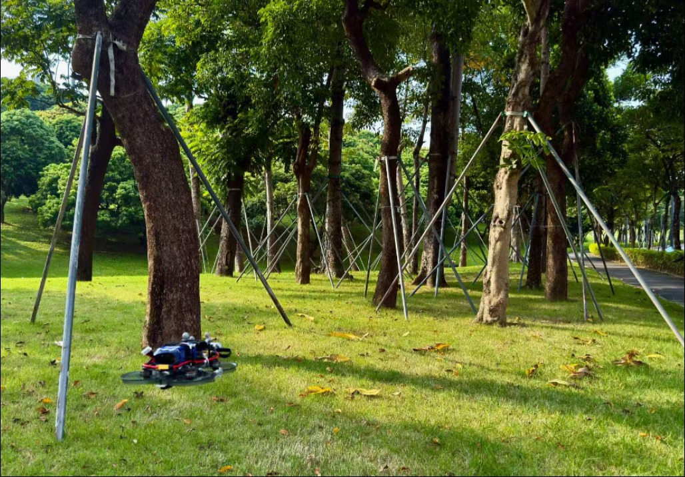

端到端四旋翼轨迹规划
面向复杂障碍环境，设计融合深度视觉、无人机状态与参考路径的端到端局部轨迹规划器，通过单次网络推理生成连续轨迹，并结合可微训练、强化学习微调和机载推理加速，完成从算法设计到高速实机飞行的验证。

任务与职责
项目任务：项目研究基于深度学习的四旋翼局部轨迹规划，将参考路径作为规划条件，与深度图像和无人机状态联合编码。规划器预测轨迹参数后，通过 MINCO 重建连续轨迹；训练阶段利用轨迹代价进行可微优化，并针对连续重规划时的轨迹衔接平滑性开展强化学习微调。
个人职责：作为第一作者，负责多模态轨迹规划器设计、可微轨迹训练流程构建、Isaac Sim / Isaac Lab 训练环境搭建与 PPO 策略微调，以及 Jetson Orin NX 机载部署、TensorRT 推理加速和实机飞行验证。
系统流程
- 深度图像 / 状态 / 参考路径
- 多模态特征融合
- 轨迹参数预测
- MINCO 轨迹重建
- 机载推理与执行
算法与实现
视觉、状态与参考路径融合
采用 ResNet-18 提取深度图像特征，通过 Cross-Attention 融合无人机状态与参考路径信息，建立面向局部规划任务的多模态表示。网络单次前向推理输出 22 维参数，并据此生成四段五次 MINCO 轨迹，将环境感知、路径条件与连续轨迹生成连接在同一规划流程中。
由轨迹代价驱动的可微训练
构建由碰撞、平滑性与运动约束代价驱动的训练流程，通过 MINCO 轨迹重建将代价梯度反向传播至网络参数。该训练阶段无需闭环动力学仿真采样，使网络能够依据预测轨迹的几何与运动特性更新规划策略。
面向重规划衔接的强化学习微调
针对连续重规划时轨迹交接处的平滑性问题，在 Isaac Sim / Isaac Lab 中搭建训练环境。冻结视觉与路径编码器，采用 PPO 微调注意力模块及轨迹预测头，使微调集中作用于信息融合与轨迹输出部分，并通过交接处 jerk、snap 跳变评估衔接改善。
机载部署与高速飞行验证
将规划网络部署到 Jetson Orin NX，使用 TensorRT 进行推理加速，并在四旋翼无人机上完成复杂障碍环境下的高速实机飞行验证。该阶段连接网络推理、轨迹生成与实际飞行执行，检验学习式规划方法在机载计算平台上的运行效果。
验证与成果
训练与部署：网络在 RTX 5060（8 GB 显存）上 60 分钟内收敛。经 TensorRT 加速后，Jetson Orin NX 上的平均网络推理耗时为 3.27 ms。已完成复杂障碍环境下的四旋翼高速实机飞行验证。
轨迹衔接：PPO 微调后，重规划交接处 jerk 跳变由 4.578 降至 2.681 m/s³（降低 41.4%），snap 跳变由 27.328 降至 17.389 m/s⁴（降低 36.4%），改善了轨迹衔接平滑性。
论文状态：第一作者，ICRA 2027 审稿中。